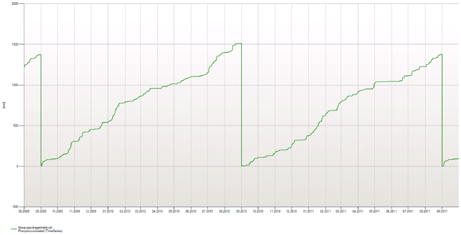
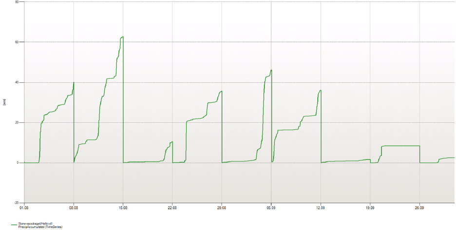
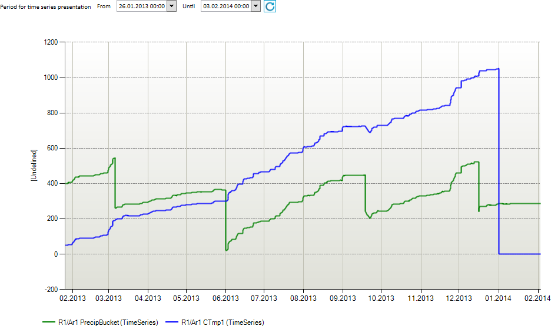
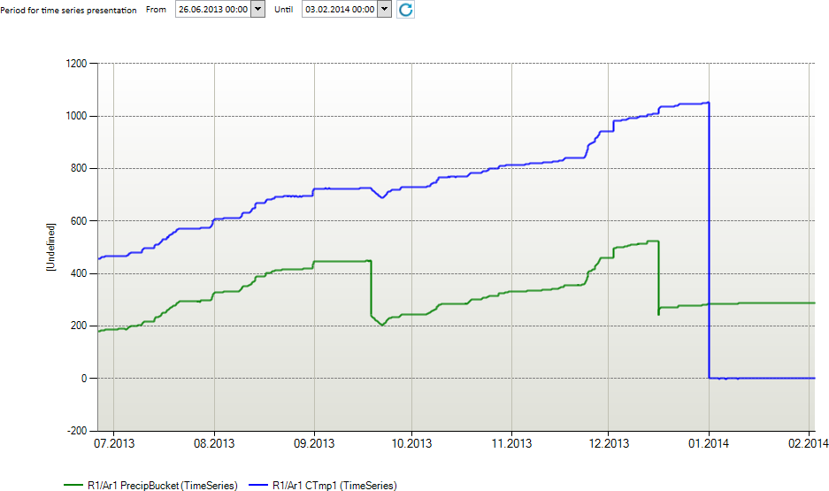

ACCUMULATE
Accumulates values for some periods for a time series. When entering a new sub period, the accumulation buffer is reset.
Syntax
- ACCUMULATE(d,s,t[,d,d])
- ACCUMULATE(t,[s],s)
- ACCUMULATE(t,s,d)
Description - syntax 1
| # | Type | Description |
|---|---|---|
| 1 | d | Initial value |
| 2 | s | Start time specification. May be a macro definition or a fully specified time point on the YYYYMMDDhhmmssxxx format. A calendar name may be used as prefix on this specification. Default is current standard time (utc+1 in Norwegian setup). |
| 3 | t | Input data series (fixed interval). |
| 4 | d | Multiplication factor A. If omitted, value is 1.0. |
| 5 | d | Offset factor B. If omitted, value is 0. |
Description - syntax 2
| # | Type | Description |
|---|---|---|
| 1 | t | Input time series (fixed interval). |
| 2 | s | Optional. Accumulation from start or end of the interval given in the next argument. ’>’ means from the start of the interval and forward. |
| 3 | s | Accumulation interval. Eg. ‘DAY’, ‘WEEK’, ‘MONTH, ‘YEAR’. You can set accumulation period to HYDYEAR, i.e. from 1. September until next 1. September (standard calendar). You can also use a prefix to overrule the standard time (utc+1 in Norwegian setup). Eg. ‘UTCWEEK’. |
Description - syntax 3
| Type | Description |
|---|---|
| t | Input data series (fixed interval). |
| s | Must be ’>’. |
| d | Accumulation period given as number of points. |
Example 1
Accumulation syntax 1 with five arguments
@ACCUMULATE(0.0, 'UTC20140101', @t('TsAccInput'), 10.0, 0.0)
The example starts accumulation at 1. January (UTC calendar) with initial value 0.0 and value at next time point t is
0.0 + 10.0 * TsAccInput[t] + 0.0
or
Result[t] = initialValue + factor A * TsAccInput[t] + factor B
for the first value and
Result[t] = Result[t-1] + factor A * TsAccInput[t] + factor B
for the next values.
Example 2
Accumulation syntax 1 with three arguments (uses default values for factor A and B (argument four and five))
@ACCUMULATE(0.0, 'YEAR+10d', @t('TsAccInput'))
The example starts accumulation 10th of January (UTC calendar) with initial value 0.0. No multiplication or offset factors are used.
Example 3
Accumulation syntax 2
## = @ACCUMULATE(@t('Precipitation_hour_operative'),'>', 'HYDYEAR')
Accumulates the precipitation for each hydrological year.

Example 4
Accumulation syntax 2 with second argument omitted.
## = @ACCUMULATE(@t('Precipitation_hour_operative'),'WEEK')
Accumulates the precipitation for each week.

Example 5
Accumulation of bucket precipitation using explicit extended periods
The following example is a general expression for a year's accumulation of precipitation combined with the Time function and extended period functions:
#
1 tstart = @Time('YEAR',@Time('SOP'))
2 viewEndTime = @Time('EOP')
3 @PushExtPeriod('x', tstart - @TimeSpan('HOUR'), viewEndTime)
4 Precip = @t('PrecipBucket') * 1.0
5 @PopExtPeriod('x')
6
7 @PushExtPeriod('y', tstart, @Time('EOP'))
8 Delta = @DELTA(Precip)
9 DeltaClipped = Delta >= -2 ? Delta : 0
10 @PopExtPeriod('y')
11 ## = @ACCUMULATE(DeltaClipped, '>','YEAR')
Some comments to the expressions above (ref. line numbers #)
- #1 Finds the start time for the chart presentation. This example uses the YEAR macro (the start of the year), combined with a reference time indicating the report start. If the reference time is not included, the report displays the current year. See also description of the Time function.
- #2 The end time for the report.
- #3 Extend relevant calculation period with one hour before the relevant start year. This example shows a linear time arithmetic by using
tstartwith the length of an hour in the internal time format. This gives necessary data to the DELTA function in the next block. - #4 This example gives only a dummy calculation (multiplied with 1), but in reality you would calculate with MIX, validate and correct functions.
- #9 Removes large negative contributions on the required period.
In the following example from Nimbus, the function has accumulated the precipitation from the turn of the year. The start value (tstart), >0, is displayed in the blue curve:

In the following example from Nimbus, the presentation starts later in the year than in the previous example. The start value (tsstar) is displayed in the blue chart:
